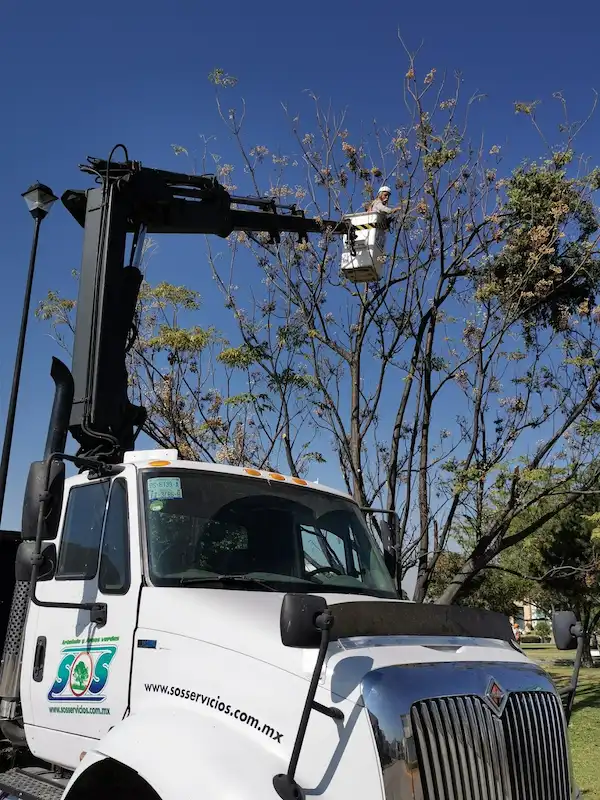
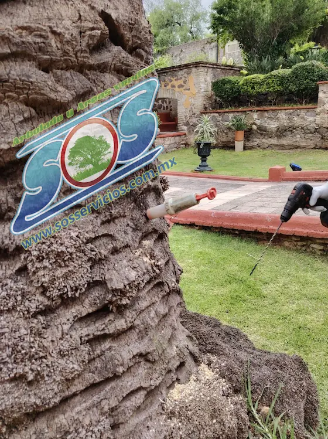
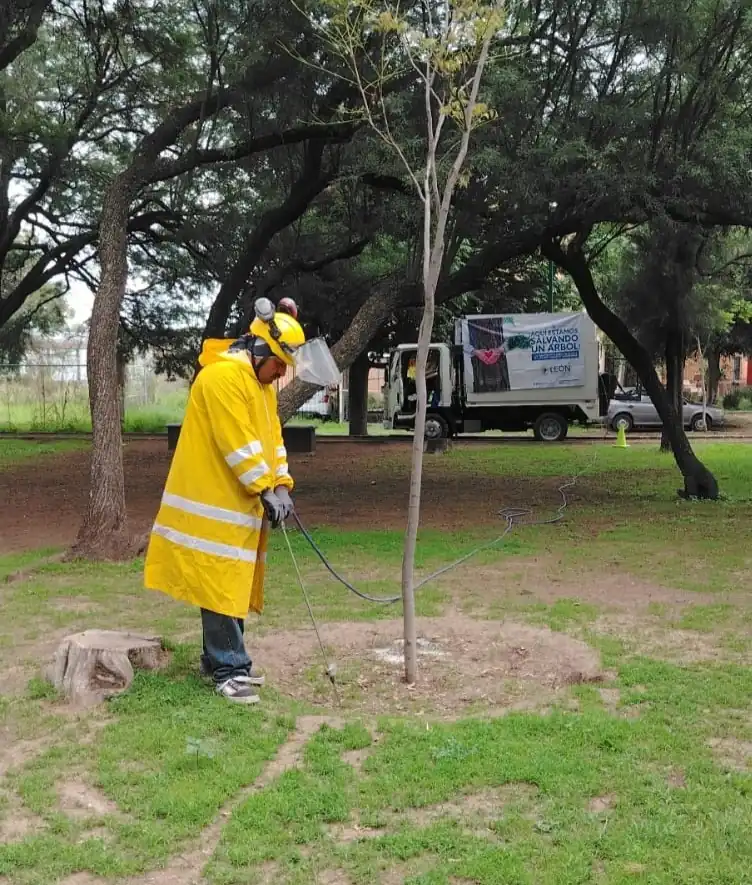
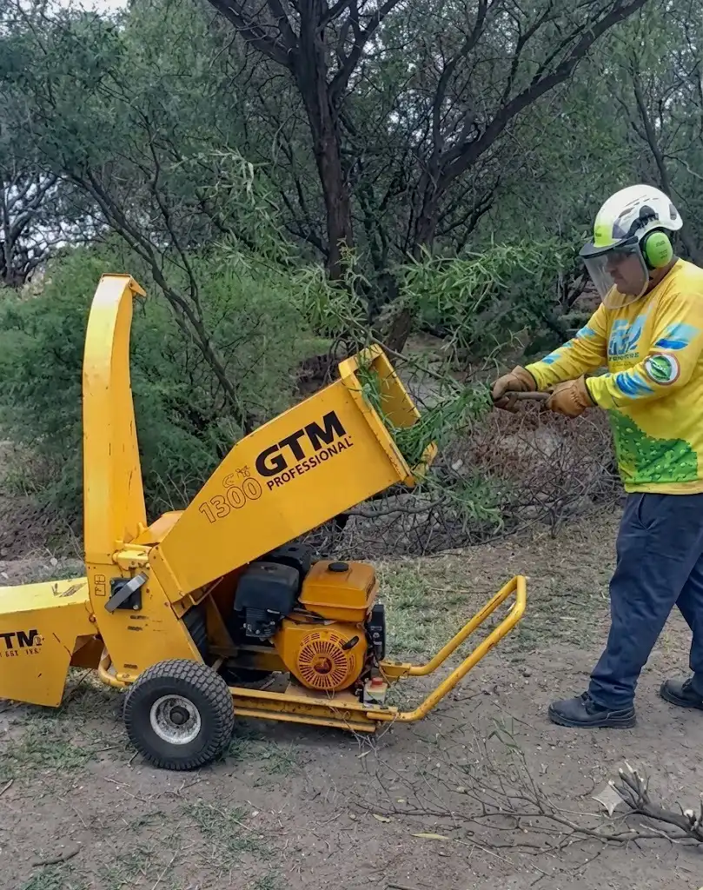
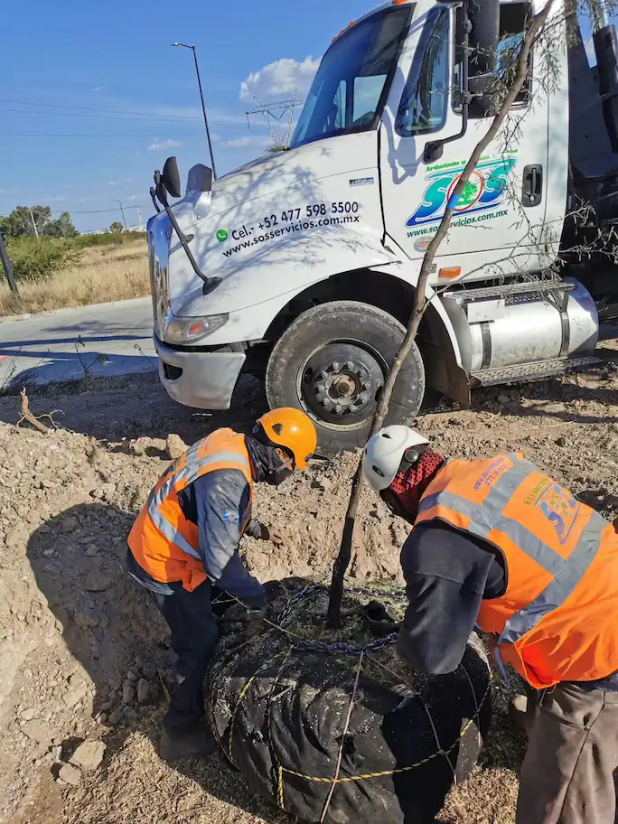

Nuestros servicios

Podas profesionales
Cortes precisos y especializados para mantener la salud y forma de tus árboles.

Endoterapia
Tratamientos inyectados para fortalecer y proteger tus árboles de plagas y enfermedades.

Altamente capacitados
Nuestros profesionales están constantemente actualizados con las últimas técnicas y tecnologías en el cuidado de árboles.

Mejoramiento de suelo
Mejora estructural del suelo para optimizar el desarrollo radicular y la estabilidad del árbol.

Herramienta especializada
Utilizamos herramientas especializadas para cada uno de nuestros servicios.

Transplante
Servicio profesional de traslado de árboles con técnicas de conservación del sistema radicular.
¿Qué hacemos en Arbolado?
En SOS Servicios abordamos el cuidado del arbolado desde una perspectiva profesional. Entendemos que cada ejemplar es un ser vivo único que requiere atención personalizada para desarrollarse de manera óptima y en armonía con el entorno urbano o comercial. Nuestro enfoque combina el diagnóstico técnico de expertos con la aplicación de tratamientos avanzados orientados a devolverle la vitalidad a ejemplares, garantizando tanto su salud a largo plazo como la seguridad de tu infraestructura.
Servicios
Podas profesionales
Reajustamos copas, retiramos ramas secas y mejoramos la forma del árbol con criterios técnicos.
Endoterapia
Aplicamos tratamientos internos para fortalecer al árbol y combatir plagas y enfermedades desde su interior.
Mejoramiento de suelo
Intervenimos el suelo para mejorar aireación, drenaje y soporte radicular, cuidando la nutrición de las raíces.
Destoconado
Removemos tocones con maquinaria especializada y restablecemos el terreno para su reutilización.
Herramienta especializada
Utilizamos equipos especializados para poda, ascenso y corte, endoterapia, y maquinaria de destoconado. Nuestro proceso está diseñado para ser eficiente y seguro, minimizando impacto en el entorno y garantizando resultados de calidad.
Certificaciones
Nuestro equipo cuenta con certificaciones en manejo y protección de arbolado urbano, trabajo seguro en altura y aplicación de tratamientos fitosanitarios autorizados.
- Certificados en poda segura y manejo de especies urbanas
- Capacitación en protección civil y trabajo en altura
- Prácticas aprobadas para la preservación del arbolado y entorno
Cuidado a la salud
Salud del entorno
Trabajamos con productos y técnicas que cuidan la salud del árbol y del entorno, evitando químicas agresivas y promoviendo la regeneración natural.
Seguridad para personas
Priorizamos la protección del equipo, la propiedad y los transeúntes con zonas de trabajo delimitadas y equipos de seguridad certificados.
Contacto
Si buscas servicio de arbolado, envíanos un mensaje o llama directamente para atención inmediata. Atendemos dudas sobre diagnósticos, costos y programación de visitas.